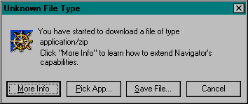
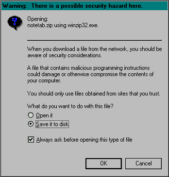
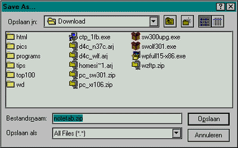
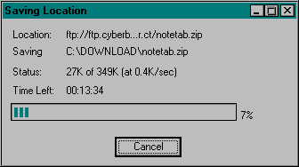

Скачивая файлы из интернета, можно столкнуться с некоторыми проблемами. Если вам не приходилось делать этого прежде, то это может оказаться довольно непростым занятием. Здесь я покажу, как скачивать файлы из интернета шаг за шагом.
1. Используйте отдельную директорию
Всегда используйте отдельную директорию для скачиваемых файлов. В этом случае будет намного проще найти эти файлы потом. Можно также сохранить копии файлов на внешних носителях, например на гибких или zip дисках.
2. Как создать директорию
Дважды щелкните мышью на значке 'Мой компьютер' на рабочем столе. Выберите диск С, щелкнув мышью дважды. Потом для создания новой директории выберите в меню 'Файл', 'Создать', 'Папку'. Будет создана новая директория, причем имя этой директории будет выделено. Измените имя директории, например, на 'дистрибутивы', и нажмите Enter.
3. Ссылка
Процесс скачивания файла начинается, когда вы щелкаете на ссылке. Ссылки обычно отличаются по цвету от текста и подчеркнуты. Как правило, ссылка ведет вас на другую HTML страницу. Однако бывают ссылки, указывающие на ZIP или EXE файл (SIT или HQX для Macintosh).
Нажатие на такую ссылку приводит к открытию предупреждающего окна, очень похожего на то, что показано ниже. Окно может выглядеть по-другому, если вы установили программы, специально предназначенные для скачивания файлов, типа GETRIGHT или Download Butler. Мне они не очень нравятся, советую не использовать их очень часто.

4. FTP и HTTP ссылки
В некоторых случаях после нажатия на ссылку можно увидеть другое окно, типа того, что показано ниже. Это окно открывается, если это была ссылка FTP, а не HTTP. Разница между ними не так важна. Результат будет тем же самым. FTP и HTTP - просто два разных типа протоколов.

5. Принудительное сохранение файла
В некоторых ситуациях, вместо сохранения на диск браузер может попытаться открыть файл. Как будто это веб страница, или HTML файл. В такой ситуации вы увидите на экране лишь кучу странных символов. Нажмите кнопку 'Остановить' или клавишу Escape на клавиатуре. Возвратитесь назад, нажав кнопку 'Назад'. Нажмите клавишу 'Shift' и щелкните на ссылке снова. Таким образом вы заставите браузер сохранить файл на диск.
6. Всегда сохраняйте. Никогда не открывайте.
При любых обстоятельствах сохраняйте файл на диске. Ссылка HTTP позволяет выбрать приложение. Ссылка FTP позволяет даже открыть файл. Оба случая могут быть очень опасны для здоровья вашего компьютера, который может быть таким образом заражен вирусом. При открытии файла, если что-то пойдет не так, файл будет потерян. Придется скачивать все сначала. Вирус может заставить переустановить все программы на компьютере. Запуск установочного файла может подвесить компьютер, или даже повредить браузер. Поэтому сохраните прежде файл на вашем диске, никогда не открывайте его online.
7. Сохранение файла
Нажмите 'Save File..' в окне, которое появится при нажатии на ссылку. Выберите 'Save it to disk' и потом нажмите'Ok'. После этого вы увидите окно 'Save As...', типа того, что показано ниже.

8. Выбор имени файла
В верхней части окна вы увидите имя текущей директории. Это должна быть та директория, куда вы обычно скачиваете файлы. Если это не так, нажмите стрелку, расположенную рядом с окном и выберите нужную директорию. Ниже расположена область, в которой показываются все файлы, расположенные в текущей директории, а еще ниже расположено имя файла, который вы хотите скачать. Нажмите 'Save', чтобы сохранить файл.

9. Состояние процесса скачки файла
После нажатия на кнопку Save, вы увидите новое окно - Saving location, которое отображает процесс сохранения файла на диске. Оно содержит некоторые данные, относящиеся к процессу загрузки. Сверху вниз: 'Location' показывает откуда вы скачиваете файл. 'Saving' отображает место, где файл будет сохранен. 'Status' показывает, какая часть файла уже была сохранена на локальном диске, размер файла и скорость сохранения. Полоса отображает в наглядной форме процесс сохранения файла и процентный эквивалент. Кнопка 'Cancel' позволяет прервать процесс загрузки файла. Иногда размер файла не может быть определен, и в этом случае вы увидите лишь сколько было сохранено и скорость загрузки.
10. Скорость сохранения файла
Следите за скоростью сохранения. Если скорость меньше 0.5 K/сек, может случиться, что файл будет испорчен, или процесс закачки зависнет на полпути, особенно, если файл очень велик, и скачивание длится несколько часов.
Отмените загрузку и попробуйте повторить ее в другой раз. Можно также попробовать найти файл в другом месте. Поздно ночью, после 12 часов или ранним утром, до 7 часов, процесс может пойти намного быстрее. Рано в выходные, тоже неплохое время. Желательно, чтобы скорость была не менее 2.0 K/сек.
11. Будьте (очень) терпеливы
В зависимости от размера файла, загрузка может занять очень много времени. Netscape занимает не менее 9 MБ, Explorer может достигать 40 MБ со всеми примочками.
Для скачки последнего потребуется не менее нескольких часов, а то и значительно больше. Терпение побеждает все, даже скачивание файлов. В конце концов, в процессе скачки файла можно просто побродить по интернету. После загрузки файла, окно, отображающее процесс, исчезнет.
12. Последний шаг
Прервите соединение с интернетом, закройте все ненужное и установите загруженную программу. Неплохо также перед установкой проверить скачанные файлы на вирусы. Если вам понравилась программа, скопируйте ее в хранилище ваших файлов. Если программа вас не устраивает, удалите ее и все файлы, который скачали. Счастливого пути.